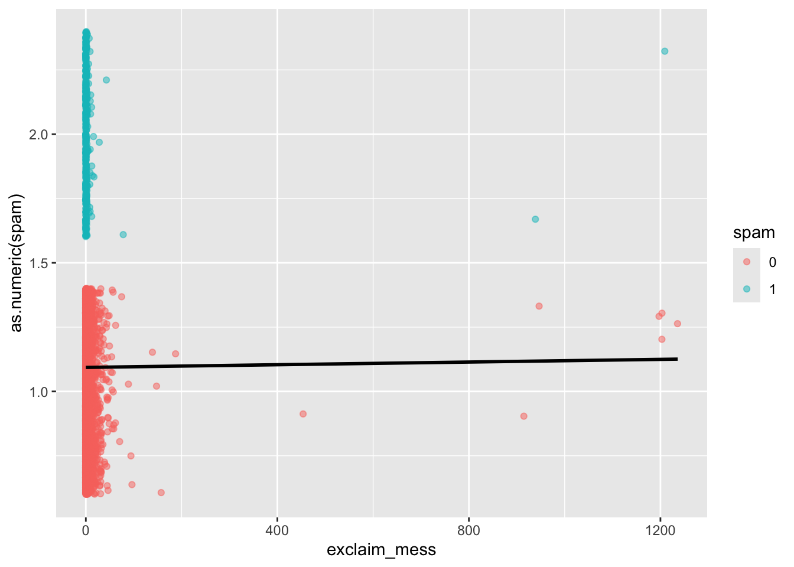
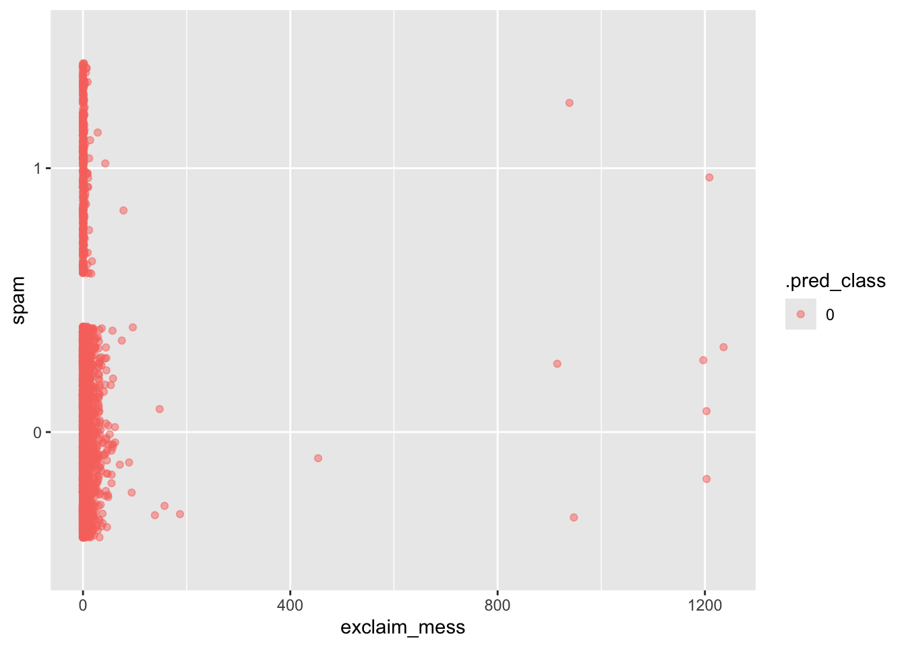
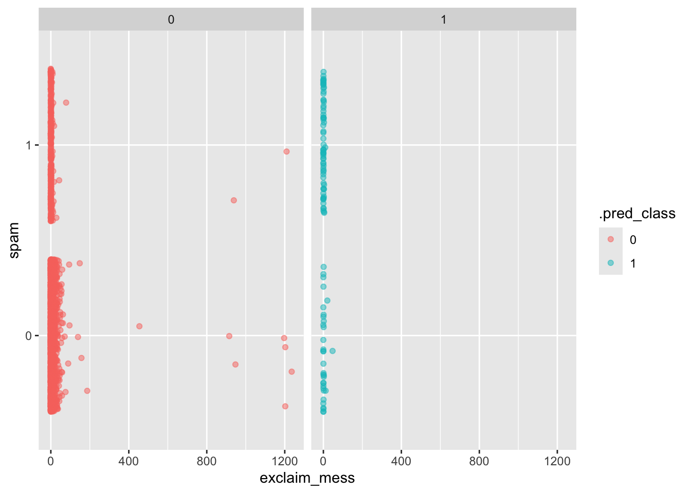

Building a spam filter (Complete)
In this code along, we will
- Use logistic regression to fit a model for a binary response variable
- Fit a logistic regression model in R
- Use a logistic regression model for classification
To illustrate logistic regression, we will build a spam filter from email data.
The data come from incoming emails in David Diez’s (one of the authors of OpenIntro textbooks) Gmail account for the first three months of 2012. All personally identifiable information has been removed.
glimpse(email)Rows: 3,921
Columns: 21
$ spam <fct> 0, 0, 0, 0, 0, 0, 0, 0, 0, 0, 0, 0, 0, 0, 0, 0, 0, 0, 0, …
$ to_multiple <fct> 0, 0, 0, 0, 0, 0, 1, 1, 0, 0, 0, 0, 0, 0, 0, 0, 0, 0, 0, …
$ from <fct> 1, 1, 1, 1, 1, 1, 1, 1, 1, 1, 1, 1, 1, 1, 1, 1, 1, 1, 1, …
$ cc <int> 0, 0, 0, 0, 0, 0, 0, 1, 0, 0, 0, 1, 0, 1, 2, 1, 0, 2, 0, …
$ sent_email <fct> 0, 0, 0, 0, 0, 0, 1, 1, 0, 0, 1, 0, 0, 1, 0, 1, 0, 0, 1, …
$ time <dttm> 2012-01-01 01:16:41, 2012-01-01 02:03:59, 2012-01-01 11:…
$ image <dbl> 0, 0, 0, 0, 0, 0, 0, 1, 0, 0, 0, 0, 0, 0, 0, 0, 0, 0, 0, …
$ attach <dbl> 0, 0, 0, 0, 0, 0, 0, 1, 0, 0, 0, 0, 0, 0, 0, 0, 0, 0, 0, …
$ dollar <dbl> 0, 0, 4, 0, 0, 0, 0, 0, 0, 0, 0, 0, 0, 0, 2, 0, 5, 0, 0, …
$ winner <fct> no, no, no, no, no, no, no, no, no, no, no, no, no, no, n…
$ inherit <dbl> 0, 0, 1, 0, 0, 0, 0, 0, 0, 0, 0, 0, 0, 0, 0, 0, 0, 0, 0, …
$ viagra <dbl> 0, 0, 0, 0, 0, 0, 0, 0, 0, 0, 0, 0, 0, 0, 0, 0, 0, 0, 0, …
$ password <dbl> 0, 0, 0, 0, 2, 2, 0, 0, 0, 0, 0, 0, 0, 0, 0, 0, 1, 0, 0, …
$ num_char <dbl> 11.370, 10.504, 7.773, 13.256, 1.231, 1.091, 4.837, 7.421…
$ line_breaks <int> 202, 202, 192, 255, 29, 25, 193, 237, 69, 68, 25, 79, 191…
$ format <fct> 1, 1, 1, 1, 0, 0, 1, 1, 0, 1, 1, 0, 1, 1, 1, 1, 1, 1, 0, …
$ re_subj <fct> 0, 0, 0, 0, 0, 0, 0, 0, 0, 0, 0, 1, 0, 1, 1, 1, 0, 1, 1, …
$ exclaim_subj <dbl> 0, 0, 0, 0, 0, 0, 0, 0, 0, 0, 0, 0, 0, 0, 0, 0, 1, 0, 0, …
$ urgent_subj <fct> 0, 0, 0, 0, 0, 0, 0, 0, 0, 0, 0, 0, 0, 0, 0, 0, 0, 0, 0, …
$ exclaim_mess <dbl> 0, 1, 6, 48, 1, 1, 1, 18, 1, 0, 2, 1, 0, 10, 4, 10, 20, 0…
$ number <fct> big, small, small, small, none, none, big, small, small, …The variables we’ll use in this analysis are
-
spam: 1 if the email is spam, 0 otherwise -
exclaim_mess: The number of exclamation points in the email message
Goal: Use the number of exclamation points in an email to predict whether or not it is spam.
Exploratory data analysis
Let’s start by taking a look at our data. Create an density plot to investigate the relationship between spam and exclaim_mess. Additionally, calculate the mean number of exclamation points for both spam and non-spam emails.

Linear model – a false start
Suppose we try using a linear model to describe the relationship between the number of exclamation points and whether an email is spam.
Fit
Fit a linear regression model to whether an email is spam from the number of exclamation points in the email.
linear_reg() |>
fit(as.numeric(spam) ~ exclaim_mess, data = email)parsnip model object
Call:
stats::lm(formula = as.numeric(spam) ~ exclaim_mess, data = data)
Coefficients:
(Intercept) exclaim_mess
1.093e+00 2.604e-05 Visualize
Visualizate the linear model.
ggplot(email, aes(x = exclaim_mess, y = as.numeric(spam), color = spam)) +
geom_jitter(alpha = 0.5) +
geom_smooth(method = "lm", se = FALSE, color = "black")`geom_smooth()` using formula = 'y ~ x'
- Is the linear model a good fit for the data? Why or why not?
No.
Logistic regression – a different approach
Let \(p\) be the probability an email is spam (success).
- \(\frac{p}{1-p}\): odds an email is spam (if p = 0.7, then the odds are 0.7/(1 - 0.7) = 2.33)
- \(\log\Big(\frac{p}{1-p}\Big)\): “log-odds”, i.e., the natural log, an email is spam
The logistic regression model using the number of exclamation points as an explanatory variable is as follows:
\[\log\Big(\frac{p}{1-p}\Big) = \beta_0 + \beta_1 \times exclaim\_mess\]
The probability an email is spam can be calculated as:
\[p = \frac{\exp\{\beta_0 + \beta_1 \times exclaim\_mess\}}{1 + \exp\{\beta_0 + \beta_1 \times exclaim\_mess\}}\]
Model 1: One predictor
Fit
Fit a logistic regression model to predict the probability an email is spam from the number of exclamation points in the email.
log_fit <- logistic_reg() |>
fit(spam ~ exclaim_mess, data = email)
tidy(log_fit)# A tibble: 2 × 5
term estimate std.error statistic p.value
<chr> <dbl> <dbl> <dbl> <dbl>
1 (Intercept) -2.27 0.0553 -41.1 0
2 exclaim_mess 0.000272 0.000949 0.287 0.774Summarize
Write the estimated model.
\[\log\Big(\frac{p}{1-p}\Big) = -2.27 - 0.000272 \times exclaim\_mess\]
Predict
What is the probability the email is spam if it contains 10 exclamation points? Answer the question using the predict() function.
Classify
We have the probability an email is spam, but ultimately we want to use the probability to classify an email as spam or not spam. Therefore, we need to set a decision-making threshold, such that an email is classified as spam if the predicted probability is greater than the threshold and not spam otherwise.
Think
Suppose you are a data scientist working on a spam filter. You must determine how high the predicted probability must be before you think it would be reasonable to call it spam and put it in the junk folder (which the user is unlikely to check). What are some trade offs you would consider as you set the decision-making threshold?
Answers will vary.
Do
Classify the emails in this dataset as spam or not spam.
log_aug <- augment(log_fit, email)
ggplot(log_aug, aes(x = exclaim_mess, y = spam, color = .pred_class)) +
geom_jitter(alpha = 0.5)
Model 2: All predictors
Fit a model with all variables in the dataset as predictors and receate the visualization above for this model.
log_fit2 <- logistic_reg() |>
fit(spam ~ ., data = email)Warning: glm.fit: fitted probabilities numerically 0 or 1 occurredlog_aug2 <- augment(log_fit2, email)
ggplot(log_aug2, aes(x = exclaim_mess, y = spam, color = .pred_class)) +
geom_jitter(alpha = 0.5) +
facet_wrap(~.pred_class)
# A tibble: 4 × 4
# Groups: spam [2]
spam .pred_class n p
<fct> <fct> <int> <dbl>
1 0 0 3521 0.991
2 0 1 33 0.00929
3 1 0 299 0.815
4 1 1 68 0.185